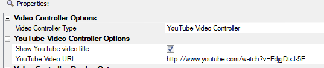
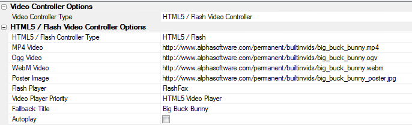
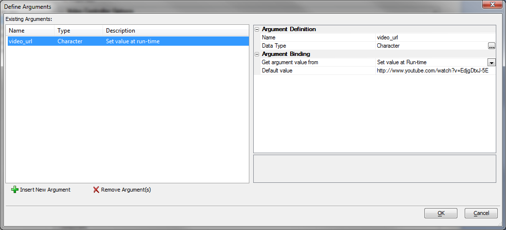
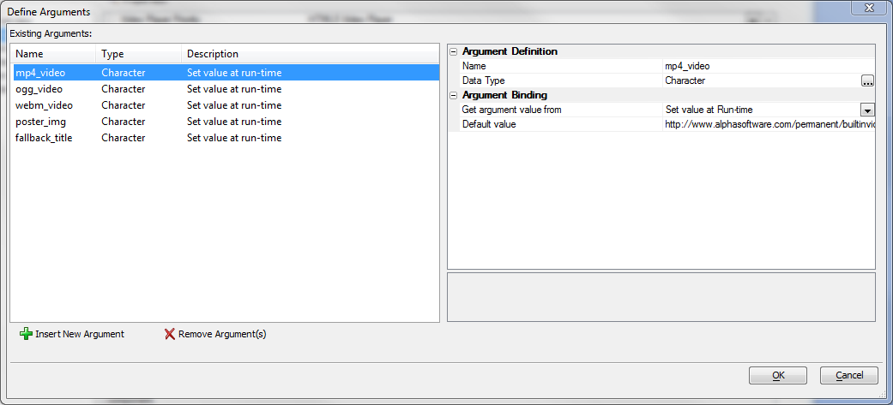
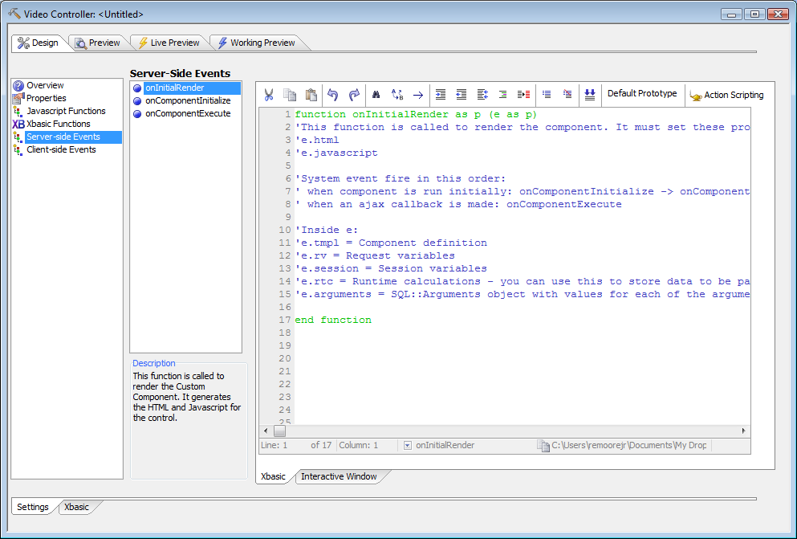
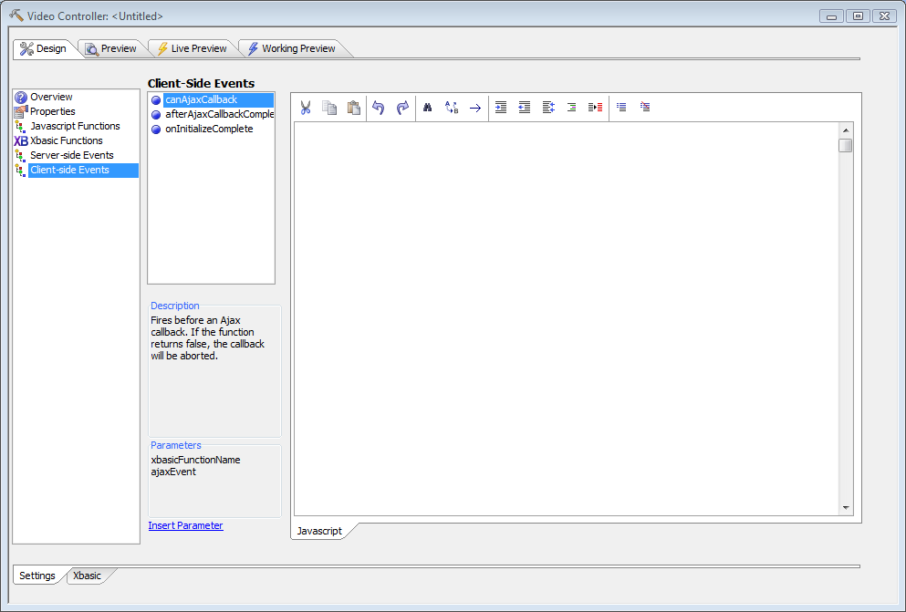
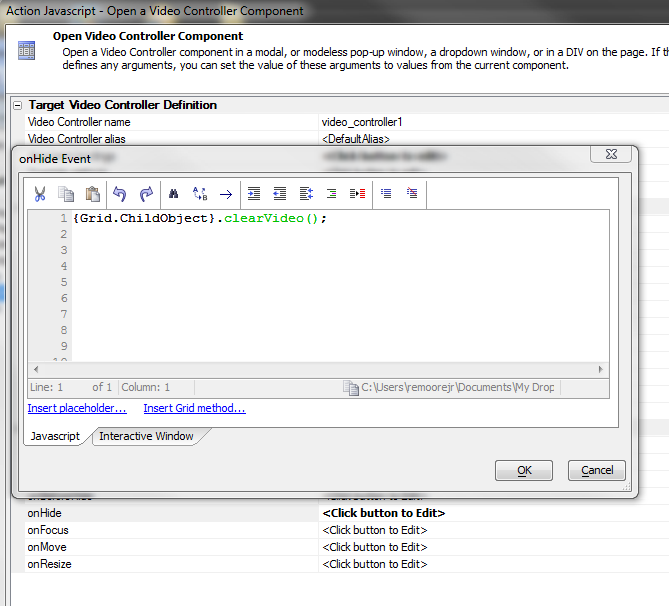

Video Player Component
Optional feature pack, included in subscriptionTable of contents
Introduction
The Video Player Component allows you to easily:- Embed any video hosted on YouTube in a smart hybrid Flash/HTML5 player.
- Add a hybrid HTML5 and Flash video player should you be hosting or streaming your own video files.
Since both HTML5 and Flash are supported, the videos will play across multiple browsers and platforms, including mobile phones and tablets.
This component is typically used to play videos that are referenced by a parent component, such as the grid component. This makes it easy to build a data driven multimedia application which includes promotional, reference or training video assets.
Setting Video Properties
Video Controller Type
You can select either a YouTube Video Player or a HTML5 /Flash Video Player.
Select the YouTube Player if you want to reference videos that are hosted on YouTube.
The YouTube interface supports the Oembed API,
Select the HTML5/Flash player if you are hosting your own video assets, or hosting through a streaming service. The default setting is the YouTube Video Player.
The numerous properties will automatically change, based upon your selection.
YouTube Video Player Options
Show YouTube Video Title
When checked, the title that has been assigned to the video will display below the player container.
YouTube Video URL
The full URL of the YouTube video that you would like to display is required.
You can simply copy and paste the fully qualified URL from the browser when displaying any video from the YouTube web site.
This field is typically bound to an argument that is tied to a field in a parent grid.
The default value presents an Alpha Five promotional video that is hosted on YouTube and is primarily used for an example video in Working Preview and Live Preview.
Start video at offset
Allows the video to start at a specific point, x number of minutes/secs from the start. This is bound to an argument and thus may be tied to a field in a parent container or JavaScript function.
Autoplay
Automatically start the video.
Show related videos on completion
This was the default behavior that most users did not want. Now the default is none.
Show video player controls
If unchecked, hides the player controls and displays a chromeless video player.
Show fullscreen button
Default value is on, if video player controls are displayed.
Autohide controls
Default is on. Will autohide controls if they are displayed.
Set default resolution to HD
Will display the highest resolution video that YouTube deems appropriate for the container size.
Show video info
When enabled, will display title information within the player if the user stops the video.
Use modest branding
Removes the YouTube button/logo from the control bar. YouTube logo is displayed and faded out within the video in the lower right corner.
Loop & replay video or video playlist on end
When enabled, will continuously play the video or the video playlist.
Use light color theme
Default is the dark theme. Alters the color of the YouTube video control bar and the associated controls.
Related video playlist
Allows the user to specify a list of related videos. This is bound to an argument and thus may be tied to a field in a parent container or driven by the result of a JavaScript function.
HTML5 / Flash Video Player Options

Prior to HTML5, the only way to include video in an HTML document was via a plug-in, typically using Flash or QuickTime.
While the inclusion of the HTML5 video tag is a giant leap forward in providing native browser support for a video, the specification does not include a specific container type or video codec. This has left the matter open to the browser suppliers to implement as they see fit. As such, there is no single container or codec that will work across all browsers.
This of course presents a dilemma for anyone wishing to provide HTML5 video across all platforms.
In order to support ALL of the major browsers that have adopted the HTML5 video tag, you need to provide your video in the following containers/codecs :
- MP4 container with H.264 encoding
- OGG/OGV container with Theora encoding
- WEBM container with VP8 encoding
Since HTML5 video is not supported on all browsers, (all versions of Internet Explorer, prior to Version 9 do not support HTML5 or HTML5 video) we provide Flash video as a fallback. By providing HTML5 video with Flash as a fallback, or as an alternative, providing Flash with HTML5 as a fallback, you can be assured that your video will be seen across all major desktop and mobile browsers.
For a detailed discussion of HTML5 Video containers and codecs see Diveintohtml5.org
HTML5 / Flash Player Type:
- HTML5 / Flash : Best selection for including video across all major browsers, including desktop and mobile.
- HTML5 Only : Only supports HTML5 video, no Flash Player included. Will play on most mobile devices and all HTML5 compliant browsers without the requirement of the Flash plug-in.
- Flash Only : Only supports a Flash Player, no HTML5 video. Benefit is only one container (MP4) and one encoding method required (h.264). The video will not play on any device using Apple's Mobile Safari which includes the iPod, iPhone or iPad.
MP4 Video : Fully qualified URL which will display a MP4 video with H.264 encoding. Default is a sample HTML5 video.
Ogg Video : Fully qualified URL which will display a Ogg/Ogv video with Theora encoding. Default is a sample HTML5 video.
WebM Video : Fully qualified URL which will display a WebM video with VP8 encoding. Default is a sample HTML5 video.
Poster Image : Fully qualified URL to display a static poster image in video container. Typical file type is of .gif, .png or .jpg. Default is a sample jpg file.
Flash Player : Flow_Player
Numerous open source Flash Players are supported. Each has a different look or skin. The default Flash Video Player is the Flow Player
Video Player Priority : HTML5 Video Player
You may set the priority to select Flash or HTML5 video as the default for the player. Thus, is you set the priority to HTML5 video and the target browser supports both HTML5 and Flash video, then HTML5 video will be used. Alternatively, if you select Flash video as the player priority, if the browser supports both Flash and HTML5 video, Flash will be used. In any case, the fallback will be either Flash or HTML5.
Fallback Title : This string is displayed in place of the Poster image if it is missing or if the browser has no video playback capability, ie: Flash is not installed and the browser does not support HTML5 video.
Autoplay : If checked, the video will autoplay when the video is loaded. This setting has no effect in most mobile browsers, which do not allow autoplay functionality. Setting autoplay on is not recommended and is generally frowned upon by the design community.
Video Controller Display Options
Video Container Aspect Ratio : 16:9
Supported values are 16:9 (widescreen format) and 4:3 (standard format). High definition (HD) video that is displayed on the web typically uses a 16:9 aspect ratio. Changes made to the aspect ratio will trigger an automatic adjustment of the Video Container height, which is calculated based on the container width.
Video Container Width : 640 (for HTML5/Flash)
Allows you to specify the video container width. The minimum value allowed is 200px. The video container height will automatically adjust when this value is entered or changed.
When using a YouTube Video Player, this value may be entered as a percentage of the parent container, ie: 90%. The value may also be left blank (which is the default when using a YouTube Player) to accept the default YouTube width and height.
Video Container Height : This is a read only computed value, based upon the aspect ratio and the video container width.
For a discussion of the other properties, which the Video Player Component has in common with all custom and user-defined components, see Custom Component Sections and Events V11.
Arguments
YouTube Videos
The video_url argument is typically bound to a character field within a grid component. The field may contain a value that was copied and pasted from YouTube.
HTML5 Videos
All of the arguments are strings that are typically linked to values within a parent grid component.
- mp4_video : Fully qualified URL of a MP4 video typically with H.264 encoding
- ogg_video : Fully qualified URL of a OGG/OGV video typically with Theora encoding
- webm_video : Fully qualified URL of a WebM video typically with VP8 encoding
- poster_img : Fully qualified URL of a static poster image, typically a gif, jpg or png file
- fallback_title : Character string used as a fallback should the browser have no video playback capabilities
Server-side Events
Like all user-defined components, the Video Player Component exposes 3 user-modifiable server-side events: onComponentInitialize, onComponentExecute, and onInitialRender, called in that order when the component is first run. When an ajax callback is made, the onComponentExecute event is called.
The Video Player Component does all of its server-side initialization in the systemOnInitialRender event, which is called just prior to onInitialRender.
Do not overwrite e.javascript in the onInitialRender event, or the Video Player Component will not be displayed. You may append your own JavaScript if you wish, e.g. e.javascript = e.javascript + myJS
Client-side Events
Like all custom and user-defined components, the Video Player Component exposes 3 user-modifiable client-side events:
- canAjaxCallback
- afterAjaxCallbackComplete
- onInitializeComplete
Methods
clearVideo() : Clears the div containing the HTML5 or Flash video player. Typically called in the onHide event of a pop-up window.

Videos about the Video Player Component
OverviewYouTube Integration with a Grid Component
HTML5 / Flash Integration with a Grid Component
Additional Options for YouTube Videos